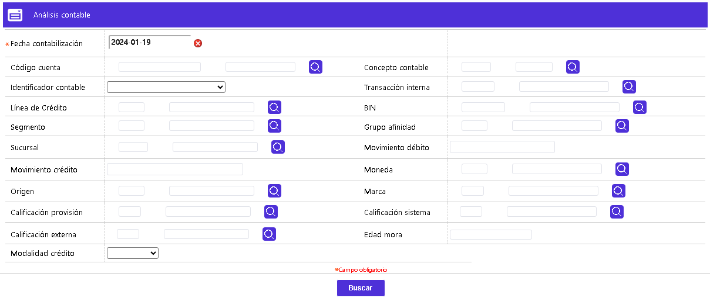
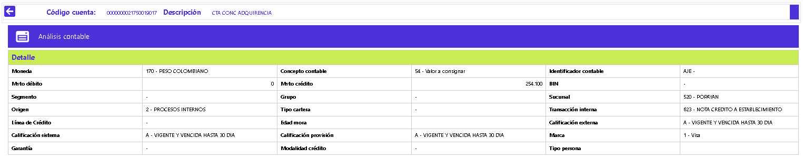
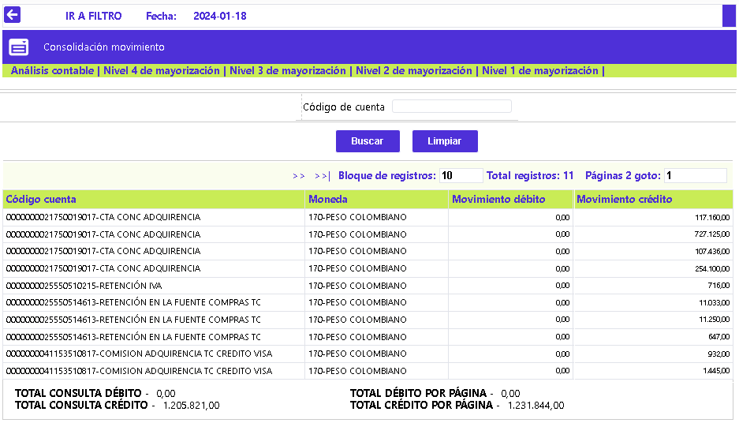
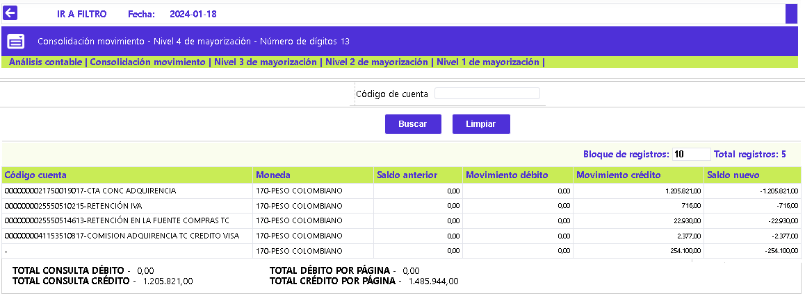

Análisis contable
En este formulario, la entidad puede consultar la información contable generada durante el proceso diario y, la manera como se afectó por los diferentes registros. Si la consulta se realiza en la misma fecha de proceso, debe tenerse en consideración, el momento de ejecución del proceso que agrupa el movimiento contable, para garantizar que la información consultada en este formulario, sea realmente la que corresponda al movimiento procesado. El formulario contiene cinco enlaces que permiten invocar otros formularios que muestran: Consolidación del movimiento, Nivel de mayorización 4, Nivel de mayorización 3, Nivel de mayorización 2, Nivel de mayorización 1 y Detalle.
Al invocarlo, se muestra en modo consulta o Filtro, y por defecto con la misma fecha de proceso o del sistema en el campo Fecha contabilización. A excepción de los campos Movimiento débito y Movimiento crédito, en los que puede digitarse un valor absoluto, los restantes campos del filtro disponen de listas de valores, de los que la entidad puede seleccionar los registros a utilizar como criterios de búsqueda de las cifras contables para la fecha de interés. Si el usuario activa el botón Buscar, el sistema realiza la consulta y en un nuevo formulario muestra los datos obtenidos.
Esta funcionalidad permite consultar la totalidad de las cifras contables del universo de tarjetas para la Fecha contabilización indicada o utilizando uno o varios de los campos provistos, en los que se puede digitar el dato o seleccionarlo de la lista de valores adjunta, luego de lo cual basta con activa el botón Buscar.

En el Análisis contable se reflejan las distintas cuentas afectadas en la fecha, para cada una, la moneda en la que se expresan sus saldos, el concepto contable e identificador contable y los montos del movimiento débito o crédito correspondientes:

Si el usuario selecciona un registro e invoca la opción Detalle, se despliega un formulario con la información completa del registro y en el cual ninguno de sus campos es modificable.

Consolidación movimiento: Si el usuario activa ese enlace, se despliega un formulario que muestra las diferentes cuentas contables que han sido afectadas por el movimiento procesado, así como el valor o monto débito o crédito correspondiente, en la parte inferior se ilustra la sumatoria de los valores débito y crédito de bloque de registros visualizados, permitiendo de un solo vistazo, validar si la contabilidad para ese día de proceso está cuadrada o no.

Nivel '4, 3, 2, 1' de mayorización: Si el usuario invoca cualquiera de esos enlaces, se despliega un formulario que muestra, de acuerdo con lo definido por la entidad en Parámetros contables, las cuentas contables en sus diferentes niveles o cantidad de dígitos definidos. Los campos desplegados en cualquiera de estos formularios son los mismos, y lo único que cambia es la cantidad de dígitos de la cuenta contable que se muestran al usuario, en el mismo formulario, en otras palabras, a diferentes niveles de consolidación o desagregado. En cada una de las cuentas afectadas se muestra: Saldo anterior, valor del Movimiento débito de la fecha, igual que el Movimiento crédito y Saldo nuevo, resultante de la sumatoria del Saldo anterior más el Movimiento débito menos el Movimiento crédito.
El formulario contiene un filtro que le permite al usuario consultar dentro de cada nivel de mayorización la información correspondiente a una cuenta determinada.

|
Actualizar datos: Si como resultado de la verificación de las cifras contables, se detecta, por ejemplo, alguna diferencia causada por una cuenta erróneamente parametrizada o no creada, luego de realizar la actividad o modificación correspondiente, le permite a la entidad, mediante este botón especial, volver a generar las cifras contables, antes de avanzar en la ejecución de los restantes procesos del batch. |